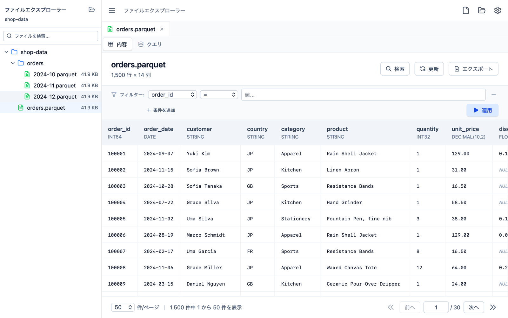

Parquet ファイルを、開くだけ。
Parqsee は Apache Parquet のための macOS ネイティブなビューアです。行を送りながら中身を眺め、条件で絞り込み、SQL で問い合わせ、必要な分だけ書き出す。ノートブックもクラスタもアップロードも要りません。
macOS 12 以降 · Apple シリコン / Intel 対応

できること
すべて手元の Mac で、手元のファイルに対して動きます。
大きなファイルでも速い
Arrow / Parquet を使う Rust 製バックエンドが、手前の行グループを読み飛ばして目的のページだけを読みます。数千万行のファイルでも小さなファイルと同じ感覚で送れます。
型をごまかさない
各列には Parquet 上の型を表示します。decimal、64 ビット整数、非有限の浮動小数点も、 JavaScript の数値に丸めずに保存されたまま表示します。
絞り込みと検索
任意の列に条件を組み立てるか、表示中のページを検索できます。条件を足しても行の順序は変わりません。
ファイルに SQL
開いているファイルはテーブル t です。DataFusion の読み取り専用クエリ — 集計、ウィンドウ関数、CTE — を実行し、結果を同じグリッドで読めます。
書き出し
ファイル全体・表示中のページ・絞り込んだ行を CSV または JSON へ。行はストリーミングされるので、1,000 行でも数千万行でもメモリ使用量は変わりません。
タブとファイルエクスプローラー
フォルダを開けば、その中の Parquet ファイルをサイドバーから辿れます。開いていたタブは、ページや絞り込み条件ごと次回起動時に戻ります。
Finder から開ける
.parquet をダブルクリック、ウィンドウや Dock アイコンにドロップ。最近開いたファイルはスタート画面からワンクリックです。
ダークモード、日本語と英語
システムの外観に追従し、言語は設定から切り替えられます。
そもそも通信しない
ファイルが Mac の外に出ることはありません。アカウントも計測もクラウドもなし — プライバシーポリシーをご覧ください。
無料で使えて、上限を外すのは買い切り 1 回
サブスクリプションなし、期限切れの体験版なし、ライセンスキーなし。
無料版
ダウンロード無料
- 同時に開けるファイルは 3 つまで
- ページ送り・絞り込み・検索
- SQL ビュー
- CSV / JSON 書き出し
フルバージョン
アプリ内課金（買い切り）
- 無料版のすべて
- 同時に開けるファイル数の上限なし
- 一度購入すればそのまま — 更新料なし